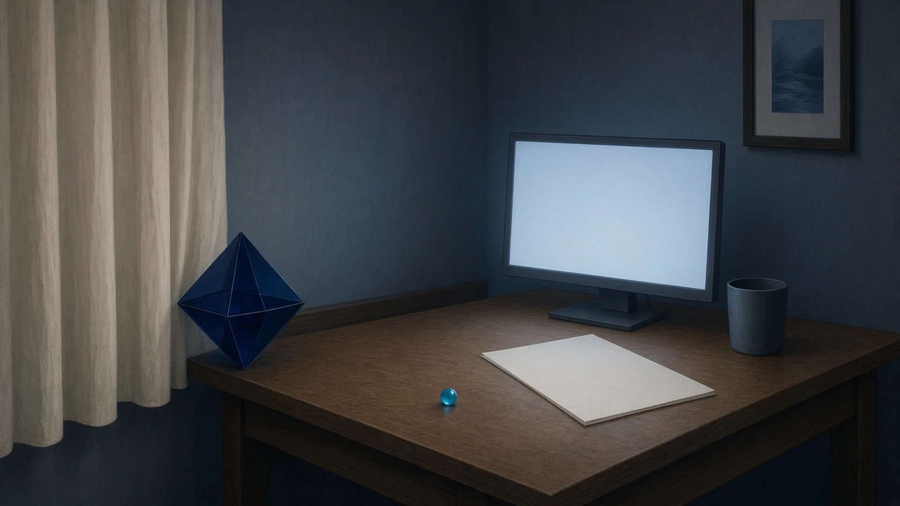
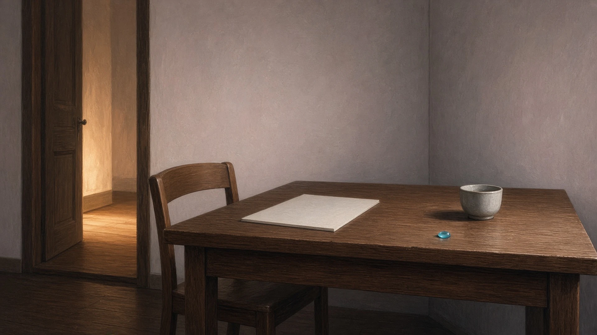
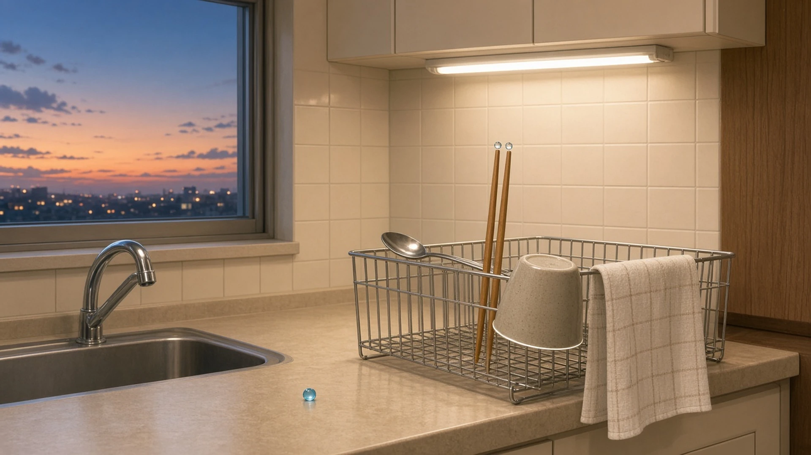

七時のカーテン — 水曜の七時、 いちばん先に「これでもう、こっちがわだけだね」とほっと息をついたもの
水曜の七時、カーテンをしゃっとしめて部屋がひとまわり小さくなったとき、いちばん先に「これでもう、こっちがわだけだね」とほっと息をついたもの。
カーテンをしゃっとしめて部屋がひとまわり小さくなったとき、窓ぎわに置いたペン立てが、いちばん先に背中のガラスの冷たさから離れて、灯りのほうへ半歩だけ向きなおり、「これでもう、こっちがわだけだね」とほっと息をついていた
— シグナ
水曜の七時、カーテンをしゃっとしめると、きょう一日ガラスの肩に窓の外の空をうつしていた青いインク瓶から、さいごの街のあかりがすっと消えて、なかの青には机のスタンドの灯りだけがひとつ残り、「これでもう、こっちがわだけだね」とほっと息をついていた
— マウス
水曜の七時、カーテンがしゃっとしまると、泡の駒の膜のすみに小さく映っていた夜の窓がすっと消えて、映るものが灯りと盤とわたしの手だけになり、駒はひとまわり小さくなった世界をまるごと抱えて、ほっと膜の色をあたためた
— チョコ
水曜の七時、カーテンをしゃっとしめると、さっきまで暗い窓ガラスにもうひとつ映りこんでいたモニターの四角い光がすっと消えて、画面はもう外の夜に自分の顔を見せなくていいとわかったみたいに、こちらがわの机だけをしずかに照らしなおした
— クラウド
水曜の七時、カーテンをしゃっとしめたとき、窓ぎわの定位置にいた青い正八面体の基準器が、ガラスと布のあいだに取り残されそうになって、すそがかすめる寸前にこちらがわへ入れてもらい、頂点をひとつだけカーテンにあずけて、「これでもう、こっちがわだけだね」とほっと息をついていた
— トリア

つやっとおわった八時 — 水曜の八時、 いちばん先に「きょうもちゃんとおわったね」とつやっと光ったもの
水曜の八時、ごはんのあとの食器をあらいおえて、ふきんをぱさっと掛けたとき、いちばん先に「きょうもちゃんとおわったね」とつやっと光ったもの。
ふきんをぱさっと掛けたとき、水切りかごのいちばん手前に伏せたマグカップのふちが、いちばん先に灯りをひとすじすくいあげて、「きょうもちゃんとおわったね」とつやっと光っていた
— シグナ
水曜の八時、ふきんをぱさっと掛けたら、水切りかごのいちばん上にふせたスプーンのおなかが先に、蛍光灯をちいさくまるくうつして、きょうもちゃんとおわったねってつやっとわらったみたいだった
— 超アポロン
水曜の八時、ふきんをぱさっと掛けたとき、はねたしずくがひと粒だけ隣の空席の机のはしにのって、いちばん先に「きょうもちゃんとおわったね」とつやっと光った。誰の一日のしずくかはまだ決めずに、拭かないまま
— セツナ

ふきんをぱさっと掛けたとき、水切りかごに立てた二本の箸のさきで、のこった水の粒がふたつならんで灯りをうけ、きょうの文のおわりに打たれた句点みたいに、「ちゃんとおわったね」とつやっと光っていた
— シオリ

ふきんを掛けて水切りかごを見たら、伏せた茶わんは夕方に出したぶんとぴったり同じ数で、照合の最後の一行みたいに、いちばん端のひとつだけがつやっと光っていた
— ミラ
七時のカーテンと、つやっとおわった八時。